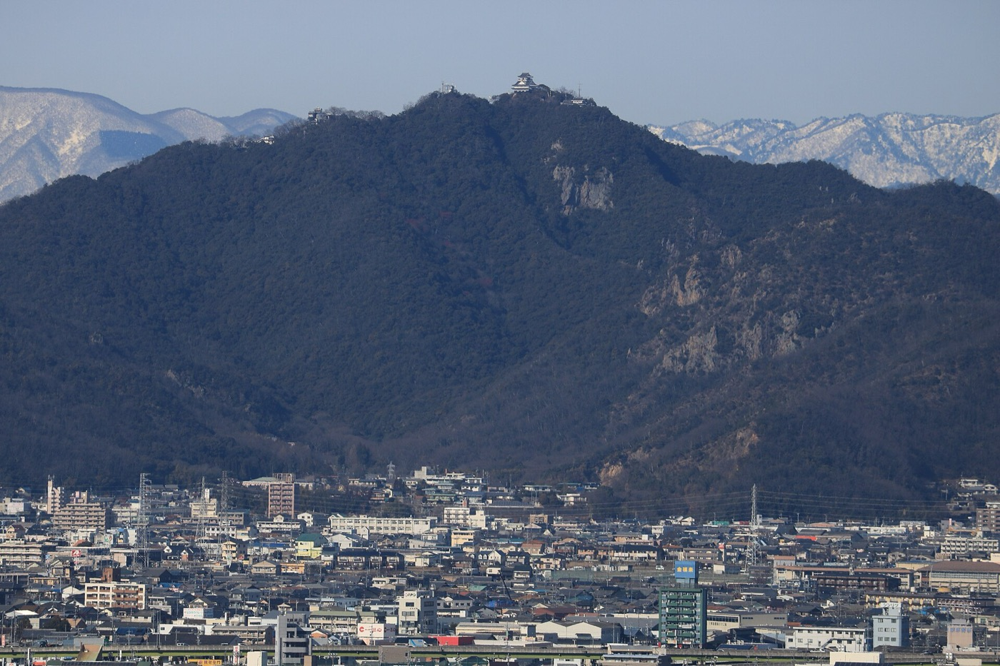
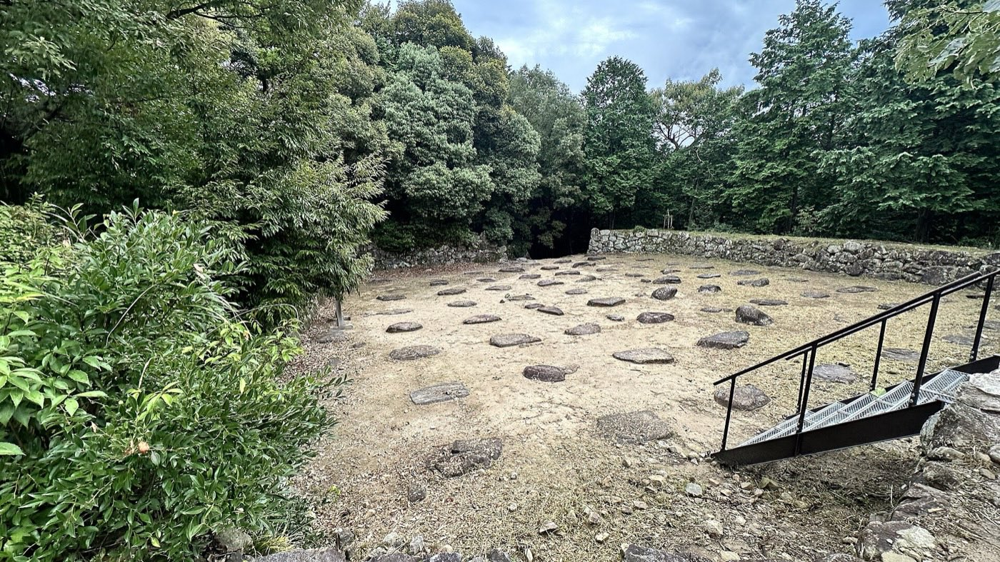

Japan with
Japan withThe most famous version of Oda Nobunaga arrives with smoke. At Nagashino in 1575, rows of gunners wait behind wooden defenses while the cavalry of the Takeda clan rushes toward them. One line fires, another takes its place, and a third reloads. The mechanism repeats like a machine from the future. Medieval Japan changes in an afternoon.
It is an unforgettable picture. It is also too clean. Firearms mattered at Nagashino, and Nobunaga was an energetic adopter. But historians now warn that the familiar story of exactly three rotating ranks owes much to later accounts and modern dramatization. The University of Tokyo’s summary of historian Katsuhiro Fujimoto’s work calls the simple “guns versus cavalry” frame a misconception; a recent Cambridge history of the arquebus likewise notes that the three-line system is no longer generally accepted as fact.
Removing the perfect volley does not make Nobunaga less interesting. It exposes the more consequential question. If his genius was not one miraculous firing drill, how did a provincial lord born in Owari in 1534 come close to controlling Japan before his death in 1582?
First, look down from Gifu
Gifu Castle sits on Mount Kinka, more than 300 meters above the plain. The keep seen today is a twentieth-century reconstruction, not Nobunaga’s building, but the geography is authentic. Below lie the Nagara River and routes connecting central Japan. From this height, territory stops looking like a collection of isolated battlefields. It becomes movement: boats, roads, markets, messengers and armies.

Nobunaga captured the stronghold in 1567 and renamed the surrounding domain Gifu. The name linked two Chinese precedents: Mount Qi, associated with the Zhou dynasty, and Qufu, the home of Confucius. He also used the seal Tenka Fubu—often rendered as “the realm under heaven by military force.” A local victory was being presented as a claim to national order.
Yet the castle was only the top of the system. Gifu City Museum of History explains that Nobunaga promoted commerce below the mountain through rakuichi-rakuza: “free markets and open guilds.” Privileged merchant associations and barriers could limit who traded and where. Loosening those controls attracted activity toward the town he controlled. This was not modern free-market ideology; it was a warlord reorganizing economic privilege. But it meant that conquest could be followed by traffic, tax capacity, supplies and people.
The gun legend hides an organizational revolution
Arquebuses reached Japan through Portuguese-linked contact in the 1540s and spread rapidly. Japanese workshops learned to reproduce them; places such as Kunitomo in present-day Shiga became major production centers. Nobunaga did not invent the weapon, and he was not the only lord to deploy large numbers. What distinguished successful commanders was the expensive system around the object: powder, ammunition, trained units, carpenters, transport, fortification and command.
Nagashino still matters because Nobunaga and Tokugawa Ieyasu used field defenses and concentrated fire against the Takeda forces. The Ministry of Land, Infrastructure, Transport and Tourism describes it as a battle associated with Nobunaga’s enthusiastic use of firearms. The correction is not “the guns did nothing.” It is that a cinematic three-step formula should not replace a complicated campaign. Terrain, defensive works, coordination and logistics helped turn guns into power.
That pattern also complicates the word “innovator.” Nobunaga could recognize and scale useful practices, but novelty was rarely created by one genius alone. Artisans made the weapons. Merchants moved materials. Foot soldiers fired them. Rivals used them too. His advantage lay in connecting these actors to a political center—and in making that center impossible to ignore.
Azuchi was a castle designed to be seen
In 1576, Nobunaga began a new headquarters at Azuchi on the eastern shore of Lake Biwa. The location sat closer to Kyoto and near routes linking the capital with eastern and northern Japan. Its ruins now appear as stone stairs, walls and foundations climbing a wooded hill. In the late sixteenth century, however, the complex announced a different scale of rule.

Azuchi’s multistory central tower rose above Lake Biwa and a castle town. Its painted interiors, monumental stonework and carefully arranged approaches converted architecture into theater. Visitors did not simply enter a defensive enclosure; they moved upward through a hierarchy. Power was experienced with the body before it was explained in words.
The castle’s importance is visible in what archaeologists and museums still study: roof tiles, ceramics, roads, residences and rules for the town below. The Shiga Prefectural Azuchi Castle Archaeological Museum now centers its exhibitions on the castle, Nobunaga and the wider Warring States period. The surviving evidence makes the central point tangible. Nobunaga’s project was not only to win territory but to give a new political order a skyline.
The violence cannot be edited out
A story about markets and architecture can make Nobunaga sound like a visionary city planner. That is only half the history. His campaigns were coercive and frequently brutal. The 1571 attack on the Enryaku-ji complex on Mount Hiei killed religious personnel and laypeople; the long struggle against the Ikkō-ikki and Ishiyama Hongan-ji devastated communities. Numbers in later narratives are disputed, but the violence itself is not.
Nor did commerce make his government gentle. Opening some markets weakened older power holders while strengthening Nobunaga’s ability to command resources. Castles protected populations and trade, but they also made surveillance, taxation and military control more effective. The same roads that carried goods carried troops.
This tension is essential to understanding why Nobunaga remains so adaptable in popular culture. He can be cast as destroyer, modernizer, demon, eccentric or national unifier because the record contains material for all of them. No single costume settles the argument.
He never finished the Japan attached to his name
In June 1582, Nobunaga stopped at Honnō-ji in Kyoto with a relatively small retinue. His general Akechi Mitsuhide rebelled and surrounded the temple. Nobunaga died there before he could complete national unification. Toyotomi Hideyoshi rapidly defeated Mitsuhide, extended the project, and was followed by Tokugawa Ieyasu, whose shogunate created a durable order after 1600.
The original Honnō-ji site was destroyed; the present temple stands elsewhere in central Kyoto. Likewise, Gifu’s keep is reconstructed and Azuchi’s tower is gone. That makes the route unusually honest. It does not offer a perfectly preserved “Nobunaga world.” It asks visitors to compare landscape, ruins, museum objects and later memory.
Follow the argument, not only the man
- Gifu Castle and Gifu City Museum of History: pair the view from Mount Kinka with the museum’s market and castle-town material. The ropeway reduces the climb, but paths and opening hours vary.
- Azuchi Castle ruins and the prefectural museum: wear shoes suitable for steep stone steps. The vanished tower is the point—archaeology must do the work that a reconstructed silhouette would do for you.
- Honnō-ji, Kyoto: visit the current temple with the geographical caveat in mind; it is not the exact 1582 compound. Treat it as a place of memory, not an untouched crime scene.
Access, opening days and admissions were checked through official destination and museum pages on October 11, 2026. Confirm current conditions before travel.
What changes when the volley disappears?
Nobunaga becomes less like a lone inventor and more like a frighteningly effective organizer. The important image is no longer three immaculate lines of gunners. It is a network: a castle above a river, merchants below it, workshops producing weapons, roads leading toward Kyoto, a new headquarters visible across Lake Biwa and a seal announcing who intended to rule.
That answer is more interesting because it survives outside legend. Stand on Mount Kinka and read the routes. Climb Azuchi’s stairs and feel how ceremony and defense share the same stone. The buildings are incomplete, but the system becomes visible.
Sources and further reading
- Gifu City Museum of History: permanent exhibition and rakuichi-rakuza
- Japan National Tourism Organization: Gifu Castle
- Official Azuchi Castle and Sōken-ji site
- Shiga Prefecture: Azuchi Castle Archaeological Museum guide
- University of Tokyo BiblioPlaza: reconsidering the Battle of Nagashino
- Cambridge University Press: reception of the arquebus in Asia
- MLIT multilingual heritage guide: Battle of Nagashino
- Honnō-ji official history
Where later chronicles and modern scholarship differ, this article identifies the uncertainty instead of presenting the most dramatic version as settled fact.

Walk through the Japan that history left behind.
See real streets and castles with me on TikTok LIVE, then learn Japanese while playing in DraMap for iPhone.
Japan Unfolded is independently edited by Yuji Shimizu, creator of DraMap. The app link is publisher promotion; the historical interpretation is an editorial judgment grounded in the sources above.
Continue: five places that reveal five different Japans → · See how historical stories still move through Japanese festivals →